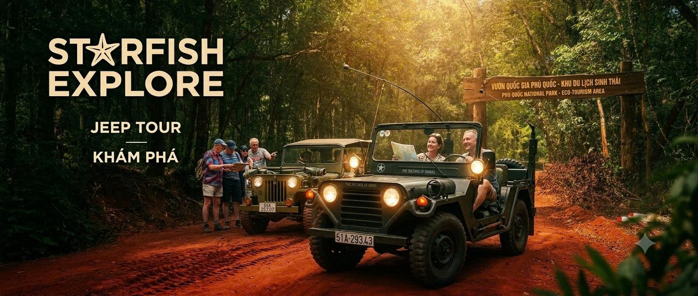
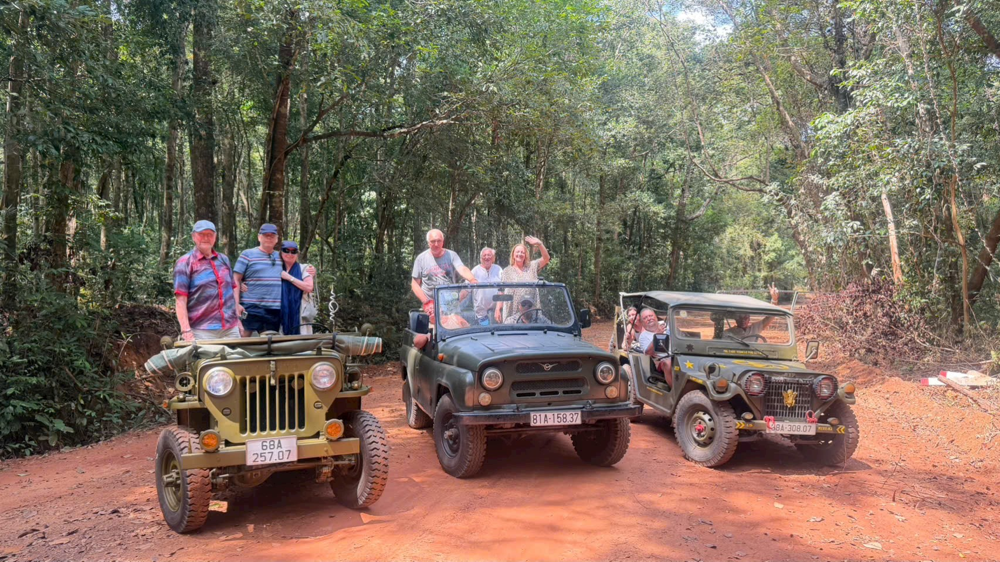

4–5 GIỜ · XE RIÊNG
Rừng & Rạch Vẹm
Đường rừng nguyên sinh, cầu gỗ, làng chài và bãi biển sao biển theo mùa.
1.200.000đĐặt tour ↗
HỒNG NGỌC TRAVEL · TOUR RIÊNG
Xe Jeep riêng và tài xế địa phương đưa bạn xuyên rừng nguyên sinh, làng chài và những góc đảo ít người biết.
Chọn hành trình ↘PRIVATE JEEP EXPERIENCE
Không tour ghép đông người. Không lịch trình cứng nhắc. Bạn chọn cung đường, điểm dừng và nhịp khám phá của riêng mình.
01 / CHỌN HÀNH TRÌNH
Đường rừng nguyên sinh, cầu gỗ, làng chài và bãi biển sao biển theo mùa.
1.200.000đĐặt tour ↗
Rạch Vẹm, Gành Dầu, làng chài, các điểm chụp ảnh và ngắm hoàng hôn.
1.600.000đĐặt tour ↗Kết hợp đường rừng, Nam Đảo, Cầu Hôn và photo session tại Sunset Town.
2.200.000đĐặt tour ↗02 / ĐẶT TOUR
Chọn một tour ở trên để mở form đặt chỗ. Hệ thống sẽ xác nhận ngày đi, số khách, điểm đón và giá cuối cùng.
Cần tư vấn riêng? Gửi email ↗